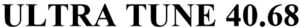

Trade Mark Journal No.2025/022 30 May 2025
WO0000001853727 (10)
Office of origin: Singapore
Date of International Registration:6 March 2025
Date of designation in the UK:
6 March 2025

International priority date claimed: 10 September 2024
(Singapore)
- Class 10
- Medical apparatus and instruments; high frequency electromagnetic therapy apparatus; orthopedic articles; massaging apparatus for personal use; electric esthetic massage apparatus for household purposes; electric skin massaging apparatus for household purposes; electrically heated skin massaging apparatus; esthetic facial massage apparatus for skin whitening effect; electric skin measuring devices for use as parts of esthetic massage apparatus; portable electric massaging apparatus; electric facial massage apparatus for household purposes; electric whole body massage apparatus for esthetic purposes; galvanic therapeutic appliances; high-frequency warmer appliances for medical purposes; high-frequency stimulators for medical purposes; high-frequency skin care equipment for medical purposes; medical skin care apparatus; medical esthetic machine for skin massage; medical skin esthetic apparatus with electrical stimulation; ultrasonic therapy apparatus; ultrasonic massaging apparatus; high-frequency heat therapy apparatus; medical skin enhancement apparatus using lasers; microdermabrasion apparatus for medical or therapeutic purposes; lasers for skin treatment; artificial skin for surgical purposes; veterinary apparatus and instruments; temperature sensors for medical use; skin diagnostic equipment for medical purposes; skin temperature indicators for medical use; medical apparatus and instruments for skin improvement with led light; apparatus for acne treatment; low-frequency skin care apparatus for medical purposes; low-frequency skin esthetic apparatus for medical purposes; high-frequency generators for use in medical treatment; skin regeneration therapy apparatus; medical apparatus and instruments for the treatment of skin; portable massaging apparatus for medical purposes; gum massagers for babies; dental apparatus and instruments; contraceptive apparatus; suture materials; medical cooling gel pack; medical cooling gel pads; stockings for therapeutic purposes; baby bottles; medical gowns; gloves for massage; protective masks for medical purposes.
APR SG PTE. LTD.
Representative: BIRD & BIRD ATMD LLP, 2 SHENTON WAY,, #18-01 SGX CENTRE I, SINGAPORE 068804, SINGAPORE